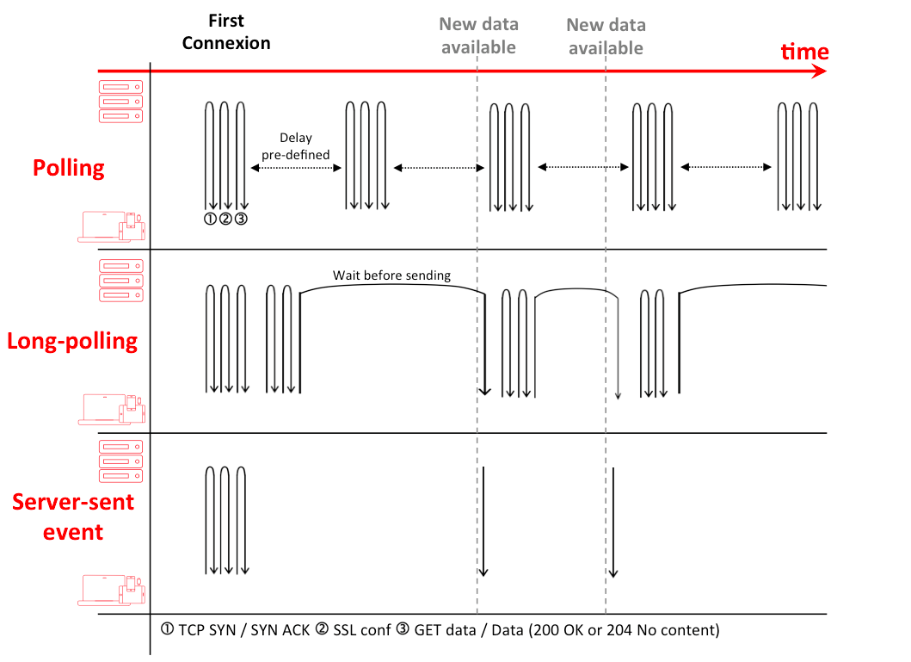
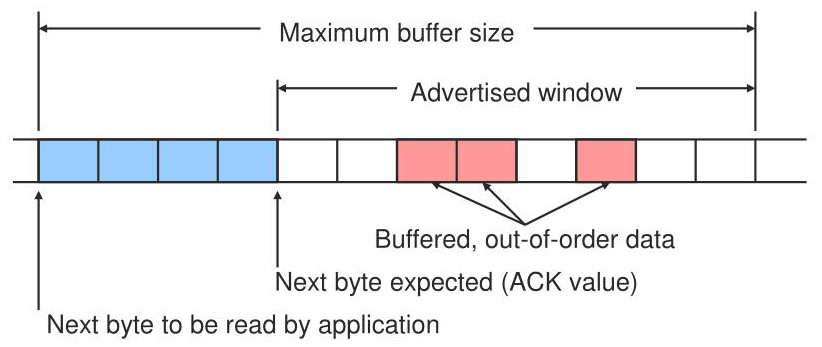

# WebSockets [The WebSocket Protocol][ws-rfc] enables full-duplex two-way communication between a client and a remote host. **You will need** * [Google Chrome][chrome] (recommended, any browser with developer tools will do) **Recommended reading** * [REST Introduction & HTTP](../rest/) --- class: center, middle, image-header ## Real-time HTTP .breadcrumbs[<a href="#1">WebSockets</a>] > [RFC 6555][ws-background]: "Historically, creating web applications that need > **bidirectional communication** between a client and a server (e.g., instant > messaging and gaming applications) has required an **abuse of HTTP** to poll > the server for updates while sending upstream notifications as distinct HTTP > calls." --- ### HTTP is not optimized for small messages .breadcrumbs[<a href="#1">WebSockets</a> > <a href="#2">Real-time HTTP</a>] HTTP has a lot of **communication overhead**: * TCP handshakes are made frequently (especially in HTTP/1). * TLS handshakes are optionally made for HTTPS. * Headers are sent in each request *and* response. <p class='center'><img src='images/tcp-tls-handshake.png' class='w80' /></p> --- ### Real-time request/response workarounds .breadcrumbs[<a href="#1">WebSockets</a> > <a href="#2">Real-time HTTP</a>] HTTP is a **request/response** protocol not meant for bidirectional communication. It is possible to obtain real-time-like behavior with HTTP with tricks such as [Comet][comet] or techniques like [Server-Sent Events (SSE)][sse]. <p class='center'></p> --- ### HTTP/2 multiplexing .breadcrumbs[<a href="#1">WebSockets</a> > <a href="#2">Real-time HTTP</a>] .grid-65[ <img src='images/http2-multiplexing.png' class='w100' /> ] .grid-35[ [HTTP/2][http2] changes things a little by introducing [server push][http2-push] and [multiplexing][http2-multiplexing]. However, the protocol is still not designed for real-time communication, as it is still based on requests and responses with the overhead of headers. ] --- class: center, middle, image-header ## What are WebSockets? .breadcrumbs[<a href="#1">WebSockets</a>] <img src='images/ws.png' class='w70' /> > [RFC 6555][ws-rfc]: "The goal of this technology is to provide a mechanism for > browser-based applications that need **two-way communication** with servers > that **does not rely on opening multiple HTTP connections**." --- ### WebSocket URL scheme .breadcrumbs[<a href="#1">WebSockets</a> > <a href="#6">What are WebSockets?</a>] WebSocket introduces 2 new URL schemes similar to `http://` and `https://`: * `ws://host:port/path?query` (port 80 by default) * `wss://host:port/path?query` (port 443 by default, secured by TLS) For example, `wss://example.com/realtime` represents a secure WebSocket endpoint on the `example.com` server. --- ### Compatible with HTTP .breadcrumbs[<a href="#1">WebSockets</a> > <a href="#6">What are WebSockets?</a>] The WebSocket protocol is **designed to work over HTTP ports 80 and 443** to support existing infrastructure (e.g. proxies, filtering, authentication). .grid-50[ To open a WebSocket connection with an HTTP/1.1 server, the client must make an [**opening handshake**][ws-handshake] using the [HTTP `Upgrade` header][http-upgrade]: ```http GET /ws HTTP/1.1 Host: ws.example.com Connection: Upgrade *Upgrade: websocket *Sec-WebSocket-Key: dGhl...HNhb== *Sec-WebSocket-Version: 13 ``` ] .grid-50[ Provided that the server supports WebSockets, it will respond that it is switching protocols from HTTP to WebSocket: ```http HTTP/1.1 101 Switching Protocols Connection: Upgrade Upgrade: websocket *Sec-WebSocket-Accept: s3pP...LBio= ``` ] .container[ Further communication on that TCP connection is then made with the WebSocket protocol instead of HTTP. ] --- #### Avoiding confusion between HTTP and WebSocket .breadcrumbs[<a href="#1">WebSockets</a> > <a href="#6">What are WebSockets?</a> > <a href="#8">Compatible with HTTP</a>] Since HTTP and WebSocket share the same port, **the server must prove to the client that it understands the WebSocket protocol**, and is not treating the handshake request as any other HTTP request. The client sends a random [base64][base64]-encoded 16-bit value in the HTTP `Sec-WebSocket-Key` header: ``` Sec-WebSocket-Key: dGhlIHNhbXBsZSBub25jZQ== ``` As defined by the protocol, the server must concatenate this value with the fixed value `258EAFA5-E914-47DA-95CA-C5AB0DC85B11`: ``` dGhlIHNhbXBsZSBub25jZQ==258EAFA5-E914-47DA-95CA-C5AB0DC85B11 ``` It must then send the base64-encoded [SHA-1][sha1] hash of this value to the client in the HTTP `Sec-WebSocket-Accept` header: ``` Sec-WebSocket-Accept: s3pPLMBiTxaQ9kYGzzhZRbK+xOo= ``` <!-- websocket echo server is down... find alternative --> > **Demo:** use the [WebSocket Echo Test][ws-echo] with your browser's developer > tools to see a real handshake. [This tool][sha1-hasher] will help you compute > the base64-encoded SHA-1 hash. --- ### WebSocket is full duplex .breadcrumbs[<a href="#1">WebSockets</a> > <a href="#6">What are WebSockets?</a>] Once the handshake is done, a single TCP connection remains open and allows for **[full-duplex][full-duplex] bidirectional communication**. <p class='center'><img src='images/ws-diagram.png' class='w65' /></p> --- ### WebSocket is message-based .breadcrumbs[<a href="#1">WebSockets</a> > <a href="#6">What are WebSockets?</a>] .grid-50[ While HTTP is a high-level request/response protocol, WebSocket is a lower-level **message protocol**. Both client and server may send each other messages at any time. Unlike HTTP: * The server does not have to send a message back in response to a client message, and vice-versa. In fact, there is no mechanism to acknowledge messages at all. It is the responsibility of the application layer. * Once the connection is established, the server may send unsollicited messages to the client (e.g. for notifications). ] .grid-50[ <img src='images/ws-message-based.png' class='w100' /> ] --- ### WebSocket is ordered .breadcrumbs[<a href="#1">WebSockets</a> > <a href="#6">What are WebSockets?</a>] The Transmission Control Protocol (TCP) guarantees [reliable, ordered transmission][tcp-order] using a sliding window technique: <p class='center'></p> Since the WebSocket protocol operates over a TCP connection, it also **guarantees that messages will arrive in the order they were sent** (on one connection). --- ### Security .breadcrumbs[<a href="#1">WebSockets</a> > <a href="#6">What are WebSockets?</a>] The WebSocket protocol uses the same techniques as HTTP for security: * Since the opening handshake is an HTTP request, the server may use HTTP security mechanisms to grant or deny access. For example: * The [**origin model**][cors] can be used to restrict which web pages can contact a WebSocket server. * **Session cookies** (or any other cookies) can be sent. * **Basic or token-based authentication** can be performed with the `Authorization` header. * Since the underlying connection is a TCP connection, **TLS** can be used to encrypt the traffic (when using the `wss://` scheme). More granular authentication or authorization is the responsibility of the application layer (just like HTTP). --- class: center, middle ## WebSocket message framing .breadcrumbs[<a href="#1">WebSockets</a>] <img src='images/ws-framing.png' class='w85' /> > Each WebSocket message consists of one or more binary [frames][ws-rfc-framing]. --- ### Anatomy of a frame .breadcrumbs[<a href="#1">WebSockets</a> > <a href="#14">WebSocket message framing</a>] The WebSocket Protocol is designed on the principle that there should be minimal framing. It is intended to be as close to exposing raw TCP as possible given the constraints of the web: * The `FIN` bit indicates whether a frame is the **final frame** of a message. It is used to split a large message into several smaller frames to avoid network congestion. 0 indicates a message fragment, 1 indicates the final fragment. There is no limit on the number of frames a message may be split into. * The 4-bit `opcode` determines the **type of frame**. The protocol defines a few **control frames** to manage the connection, and a few **data frames** to send data. See the next *Opcodes* section. * The `MASK` bit indicates whether the client data is [**masked**][ws-rfc-masking] with the `Masking-key`, a security measure to prevent [specific web infrastructure attacks][ws-rfc-masking-attack]. * The 7-bit `Payload len` indicates the **length of the payload data**. Depending on the value of those 7 bits, an extra 16 or 64 bits may be used. The maximum payload data length is 2<sup>63</sup> - 1 (about 9'223 petabytes). * The `Payload Data` contains the text or binary data of the message. --- ### Opcodes .breadcrumbs[<a href="#1">WebSockets</a> > <a href="#14">WebSocket message framing</a>] The protocol defines 2 [**data frame**][ws-rfc-data-frames] opcodes to send data: Opcode | Hex | Description :----- | :---- | :---------- `0001` | `0x1` | Indicates that the payload data is text data encoded as UTF-8. `0010` | `0x2` | Indicates that the payload data is binary data to be interpreted by the application layer. And 3 [**control frame**][ws-rfc-control-frames] opcodes to manage the connection: Opcode | Hex | Description :----- | :---- | :---------- `1000` | `0x8` | Close the WebSocket connection. `1001` | `0x9` | Send a ping (to check whether the connection is still alive). `1010` | `0xA` | Send a pong (in response to a ping). --- ### Frame size .breadcrumbs[<a href="#1">WebSockets</a> > <a href="#14">WebSocket message framing</a>] This table lists the byte size of single-frame WebSocket text messages: Text bytes | Extra protocol bytes (`FIN`, `opcode`, etc) | Total bytes :--------- | :------------------------------------------ | :---------- 1-125 | 6 | 7-131 126-65535 | 8 | 134-65543 65536+ | 14 | 65550+ In constrast, this is a minimal well-formed HTTP request to send the character `A` (1 byte of text data) from a client to a server: ```http POST / HTTP/1.1 Host: example.com Content-Type: text/plain A ``` > This HTTP request is 61 bytes long (with 60 of those bytes being extra bytes > from the HTTP protocol), and 3 round trips may be required before sending any > of it (to establish a new TCP connection secured with TLS). The equivalent > WebSocket message would be only 7 bytes long and require no previous round > trip on an existing connection. --- class: center, middle ## Show me some code .breadcrumbs[<a href="#1">WebSockets</a>] --- ### Creating a WebSocket server .breadcrumbs[<a href="#1">WebSockets</a> > <a href="#18">Show me some code</a>] This is a simple Node.js WebSocket server that will accept connections from clients, send them a message, and listen for client messages: ```js import { WebSocketServer } from 'ws'; // Create a WebSocket server that will accept connections on port 3000. const `wss` = new WebSocketServer({ port: 3000 }); // Listen for client connections. `wss`.on('connection', function connection(`ws`) { // Listen for messages from the client once it has connected. `ws`.on('message', function incoming(message) { console.log('received: %s', message); }); // Send something to the client. `ws`.send('something'); }); ``` > This server is implemented with the [`ws` npm package][ws-npm]. --- ### Connecting with the WebSocket Web API .breadcrumbs[<a href="#1">WebSockets</a> > <a href="#18">Show me some code</a>] Modern browsers include the [WebSocket Web API][ws-api]. Opening a WebSocket connection is as simple as instantiating a `WebSocket` object: ```js // Open a WebSocket connection to the server running on localhost port 3000. const `ws` = new WebSocket('ws://localhost:3000'); // Wait for the connection to open. `ws`.addEventListener('open', function(event) { // Send something to the server. `ws`.send('Hello Server!'); }); // Listen for message from the server. `ws`.addEventListener('message', function(event) { console.log('Message from server ', event.data); }); ``` --- ## WebSocket vs. HTTP .breadcrumbs[<a href="#1">WebSockets</a>] .grid-40[ **Advantages** * Full duplex real-time communication. * Much more efficient for small and/or frequent messages (since there is less connection establishment and protocol overhead). ] .grid-60[ **Disadvantages** * No high-level semantics like request/response or publish/subscribe. * Keeping open TCP connections consumes resources. Serving many WebSocket clients has [performance implications][tcp-connections-limit] for the server. * No caching ([unlike HTTP][http-caching]). * No [support in legacy clients][ws-support] (e.g. older versions of Internet Explorer). ] --- ## Resources .breadcrumbs[<a href="#1">WebSockets</a>] * [WebSocket][ws] * [The WebSocket Protocol RFC][ws-rfc] * [Writing WebSocket servers][ws-mdn] * [HTTP/2 WebSockets][http2-websockets] * HTTP * [Comet][comet] * [Server-Sent Events (SSE)][sse] * [Introduction to HTTP/2][http2] * [HTTP/2 server push][http2-push] * [TCP Presentation][tcp] **Going further** * [Web Application Messaging Protocol (WAMP)](../wamp/) --- ## TODO .breadcrumbs[<a href="#1">WebSockets</a>] * Subprotocols: * https://tools.ietf.org/html/rfc6455#section-1.9 * https://www.iana.org/assignments/websocket/websocket.xml#subprotocol-name * https://www.iana.org/assignments/websocket/websocket.xhtml#extension-name [base64]: https://en.wikipedia.org/wiki/Base64 [chrome]: https://www.google.com/chrome/ [comet]: https://en.wikipedia.org/wiki/Comet_(programming) [cors]: https://en.wikipedia.org/wiki/Cross-origin_resource_sharing [full-duplex]: https://en.wikipedia.org/wiki/Duplex_(telecommunications)#Full_duplex [http-caching]: https://developer.mozilla.org/en-US/docs/Web/HTTP/Caching [http-upgrade]: https://developer.mozilla.org/en-US/docs/Web/HTTP/Protocol_upgrade_mechanism [http2]: https://developers.google.com/web/fundamentals/performance/http2 [http2-multiplexing]: https://developers.google.com/web/fundamentals/performance/http2#request_and_response_multiplexing [http2-push]: https://www.smashingmagazine.com/2017/04/guide-http2-server-push/ [http2-websockets]: https://medium.com/@pgjones/http-2-websockets-81ae3aab36dd [quickhash]: https://quickhash.com [sha1]: https://en.wikipedia.org/wiki/SHA-1 [sha1-hasher]:https://emn178.github.io/online-tools/sha1.html [sse]: https://developer.mozilla.org/en-US/docs/Web/API/Server-sent_events/Using_server-sent_events [tcp]: https://www.slideserve.com/johana/tcp [tcp-connections-limit]: https://stackoverflow.com/questions/2332741/what-is-the-theoretical-maximum-number-of-open-tcp-connections-that-a-modern-lin [tcp-order]: https://en.wikipedia.org/wiki/Transmission_Control_Protocol#Reliable_transmission [ws]: https://en.wikipedia.org/wiki/WebSocket [ws-api]: https://developer.mozilla.org/en-US/docs/Web/API/WebSocket [ws-background]: https://tools.ietf.org/html/rfc6455#section-1.1 [ws-echo]: https://www.websocket.org/echo.html [ws-handshake]: https://developer.mozilla.org/en-US/docs/Web/API/WebSockets_API/Writing_WebSocket_servers#The_WebSocket_handshake [ws-mdn]: https://developer.mozilla.org/en-US/docs/Web/API/WebSockets_API/Writing_WebSocket_servers [ws-npm]: https://www.npmjs.com/package/ws [ws-rfc]: https://tools.ietf.org/html/rfc6455 [ws-rfc-control-frames]: https://tools.ietf.org/html/rfc6455#section-5.5 [ws-rfc-data-frames]: https://tools.ietf.org/html/rfc6455#section-5.6 [ws-rfc-framing]: https://tools.ietf.org/html/rfc6455#section-5.2 [ws-rfc-masking]: https://tools.ietf.org/html/rfc6455#section-5.3 [ws-rfc-masking-attack]: https://tools.ietf.org/html/rfc6455#section-10.3 [ws-support]: https://caniuse.com/#feat=websockets